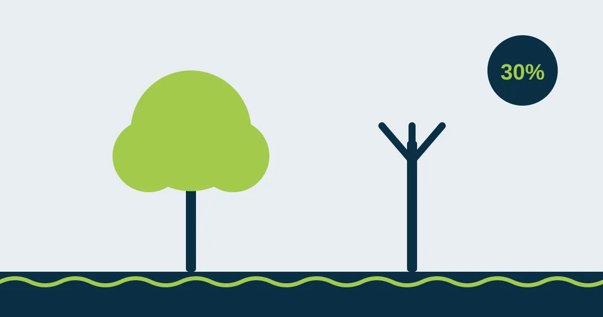

Poda drástica: por que cortar mais de 30% da copa pode gerar multa na Região dos Lagos

A árvore cresceu demais, está fazendo sombra na piscina, sujando o quintal ou chegando perto do telhado. A solução parece simples: chamar alguém e “baixar” a árvore de uma vez. Só que esse corte radical, que deixa só o tronco e alguns tocos, tem nome: poda drástica. E na Região dos Lagos ela pode virar multa.
Neste artigo você vai entender o que é poda drástica, o que dizem as regras de Cabo Frio e Búzios e como podar sua árvore do jeito certo.
O que é poda drástica
Poda drástica é a retirada de uma parte grande demais da copa de uma vez. Em geral, ela aparece de três formas:
- cortar mais de 30% do volume da copa;
- “decapitar” a árvore, cortando o topo e deixando só os galhos principais;
- podar só um lado, deixando a árvore desequilibrada.
Muita gente faz isso achando que vai “resolver por muitos anos”. Na prática acontece o contrário: a árvore reage soltando brotos fracos e rápidos, e em pouco tempo está maior, mais desorganizada e mais perigosa.
O que diz a lei em Cabo Frio
A Lei Municipal nº 3.345, de 8 de novembro de 2021, define como poda drástica a retirada de mais de 30% da copa da árvore e proíbe essa prática. A mesma lei exige autorização prévia da prefeitura para poda e supressão (remoção) de árvores, em área pública ou privada. Quem descumpre comete infração ambiental e está sujeito a multa e outras sanções.
A fiscalização é real: a Secretaria de Meio Ambiente de Cabo Frio já autuou até a concessionária de energia por poda drástica sem autorização em árvores da cidade. Se acontece com uma grande empresa, pode acontecer com qualquer morador ou condomínio.
Na prática: em Cabo Frio, o pedido de poda é feito na Secretaria de Meio Ambiente. A prefeitura vistoria, autoriza (ou não) e o proprietário contrata uma empresa para executar o serviço dentro do que foi autorizado.
E em Búzios?
Em Armação dos Búzios, o Projeto de Lei nº 21/2024, que trata do Plano Municipal de Arborização Urbana, prevê multa de 400 a 4.000 UPFM por árvore para quem fizer poda drástica, além de outra multa para quem podar sem autorização ou comunicação ao órgão ambiental. A UPFM é a unidade fiscal do município e seu valor é reajustado periodicamente.
Como se trata de um projeto, vale confirmar com a Secretaria de Meio Ambiente de Búzios as regras em vigor no momento do serviço. O recado, porém, é o mesmo de Cabo Frio: a cidade trata a poda drástica como infração grave, cobrada por árvore.
E a lei federal?
Além das leis municipais, a Lei de Crimes Ambientais (Lei 9.605/1998, art. 49) pune quem destrói, danifica ou maltrata plantas de ornamentação de logradouros públicos ou em propriedade alheia, com detenção de três meses a um ano ou multa. Ou seja: uma poda drástica na árvore da calçada pode ter consequência também fora da esfera municipal.
Por que 30% é o limite
A copa é a “fábrica” de energia da árvore: é nas folhas que ela produz o alimento para raízes, tronco e galhos. Quando mais de um terço some de uma vez:
- a árvore entra em estresse e gasta a reserva que tinha;
- os cortes grandes não cicatrizam bem e viram porta de entrada para fungos e cupins;
- o tronco apodrece por dentro, sem sinal visível por fora;
- os brotos novos nascem presos só na casca e quebram com facilidade em ventania.
O resultado é uma árvore mais fraca e com maior risco de queda, justamente o contrário do que o dono queria.
Como podar sem cair em multa
- Peça a autorização antes. Procure a Secretaria de Meio Ambiente da sua cidade.
- Contrate quem siga a norma. A ABNT NBR 16246-1 define como podar sem ferir a árvore.
- Divida em etapas. Se a árvore precisa diminuir muito, faça em podas espaçadas, respeitando o limite de cada vez.
- Guarde os documentos. Autorização, nota fiscal e fotos de antes e depois protegem você numa fiscalização.
Fontes
- Prefeitura de Cabo Frio — autuação por poda drástica (Lei 3.345/2021)
- Prefeitura de Cabo Frio — poda e corte exigem permissão
- Câmara de Búzios — Projeto de Lei 21/2024 (Plano Municipal de Arborização Urbana)
As informações sobre leis e valores refletem a legislação e a prática na data de publicação. Regras municipais podem mudar: confirme sempre com a Secretaria de Meio Ambiente da sua cidade.
Quer resolver isso com segurança?
Mande fotos da árvore pelo WhatsApp e receba uma avaliação e um orçamento da Poda Azul.